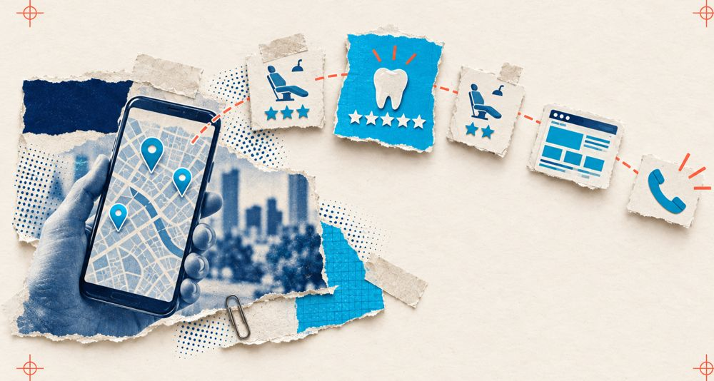
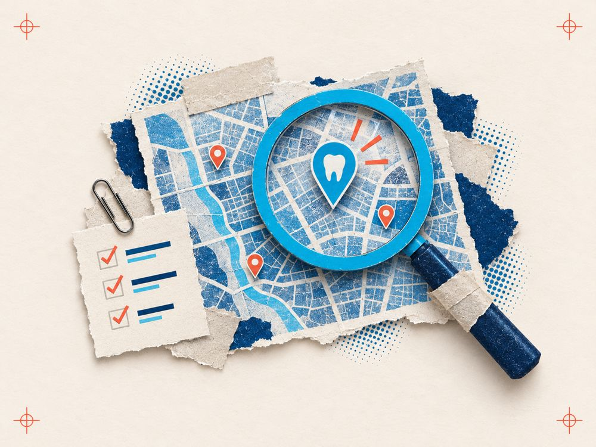

Ищет
Вводит «стоматология рядом» или «имплантация цена» в Яндексе и на картах.
поиск · картыМаркетинг для стоматологий
Сайт, поиск, Яндекс Карты, 2ГИС и медицинские площадки ведёт одна команда: по общему плану и с понятным отчётом об обращениях.
Получить диагностику клиники Посмотреть пример отчётаПуть пациента

Вводит «стоматология рядом» или «имплантация цена» в Яндексе и на картах.
поиск · картыСмотрит рейтинг, свежие отзывы, фото и расстояние у 3–5 клиник поблизости.
карты · площадкиОткрывает сайт: врачи, цены, услуга, лицензия. Ищет причину выбрать именно вас.
сайтЗвонит, пишет или записывается онлайн. Мы видим, из какого канала пришло обращение.
учёт обращенийГде теряются пациенты
Сколько стоит бездействие именно для вашей клиники, считаем в диагностике.
Наведите на карточкуНажмите на карточку, чтобы увидеть, что мы делаем.
Узнаёте свою ситуацию?
Обычно подходит тариф «Всё присутствие»: сайт входит в стоимость.
Обычно подходит тариф «Карты + SEO».
Одна команда отвечает за всё присутствие клиники.
Тариф рассчитан на один адрес, дополнительный адрес считаем отдельно.
Продвижение стоматологии
Не двадцать разрозненных услуг, а всё, по чему пациенты находят и выбирают клинику, под одним планом.
Страницы под каждую услугу, техническое состояние, SEO-продвижение по услугам и районам в Яндексе.
Полные карточки: фото, услуги, врачи, часы работы, ответы на вопросы.
ПроДокторов, СберЗдоровье, НаПоправку: профили врачей, сбор отзывов, ответы.
Звонки, заявки и записи по каналам: видно, что работает.
Реклама в Яндекс Директе — отдельный модуль. Подключаем там, где она окупается, а не по умолчанию.
Сайт для стоматологии
Каждая новая страница услуги продолжает приводить пациентов из поиска. Поэтому строим сайт поэтапно, по плану, а не переделываем раз в три года.
Как работаем
Первый месяц расписан по неделям. Вы знаете, что происходит, и видите результат каждой недели.
Собираем доступы, смотрим сайт, карточки, площадки и трёх соседей. Утверждаем план.
Цели в Метрике, учёт звонков и заявок. Без этого результат не посчитать.
Заполняем карточки, профили врачей, запускаем процесс сбора отзывов.
Дорабатываем текущий сайт или запускаем новый. План на 6 месяцев.
План → работа → отчёт → созвон → новый план
Каждый месяц
У каждой цифры есть период, определение и источник. Не выдаём предположение за факт.
Стоимость продвижения
35 тыс ₽/мес
Чтобы клинику находили и выбирали на картах и площадках.
65 тыс ₽/мес
Если сайт уже есть и его нужно вывести в поиск по услугам.
85 тыс ₽/мес
Полная система: сайт, поиск, карты, площадки и учёт обращений.
Цена за одну клинику и один адрес. Дополнительный адрес считаем отдельно.
Оплачивается отдельно: реклама в Яндекс Директе (ведение и бюджет), платные сервисы карт и площадок, съёмка, домен и хостинг.
В договоре: состав работ месяца, сроки и дата отчёта. Если срываем срок по своей вине, исправляем за свой счёт.
Сравнение
| Критерий | Штатный маркетолог | Несколько подрядчиков | Агентство «под заявки» | МедВектор |
|---|---|---|---|---|
| Карты, площадки и отзывы | как успеет | отдельный подрядчик | редко | в основе работы |
| Сайт и SEO | нужны подрядчики | отдельный подрядчик | посадочная под рекламу | в общем плане |
| Кто отвечает за всё | один человек | никто | за рекламу | одна команда |
| Отчёт по каналам | зависит от человека | у каждого свой | по заявкам из рекламы | один, по всем каналам |
| Цена известна заранее | зарплата + сервисы | сумма счетов | ведение + бюджет | фиксированная |
основатель МедВектор
Почему можно доверять
Мы молодое агентство и не выдаём чужие результаты за свои. Поэтому показываем метод и условия открыто.
Условия старта
Коротко о важном
Выберите вопрос — колесо повернётся
Ответ
Следующий шаг
Без обязательств. Покажем, где вы теряете пациентов и что делать первым.
